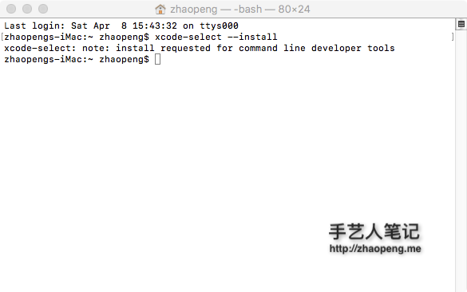

xcode
作为一个开发人员, xcode 是必装的,8.3 以前可以不通过 App Store是进行离线安装,但是现在不行了,只能通过 App Store是来安装了,好在以后可以增量更新,不用每次都下载一个整包更新了.
xode 下载地址 https://itunes.apple.com/us/app/xcode/id497799835
安装成功之后,安装 Xcode command line tools,运行:
xcode-select --install

强烈建议安装,里面包含大量有用的命令,可以到 /Library/Developer/CommandLineTools/usr/bin 查看所有的命令.
-rwxr-xr-x 1 root admin 22704 3 25 03:44 BuildStrings
-rwxr-xr-x 1 root admin 29184 3 25 03:44 CpMac
-rwxr-xr-x 1 root admin 105136 3 25 03:44 DeRez
-rwxr-xr-x 1 root admin 18416 3 25 03:44 GetFileInfo
-rwxr-xr-x 1 root admin 62352 3 25 03:44 MergePef
-rwxr-xr-x 1 root admin 22896 3 25 03:44 MvMac
-rwxr-xr-x 1 root admin 24304 3 25 03:44 ResMerger
-rwxr-xr-x 1 root admin 111040 3 25 03:44 Rez
-rwxr-xr-x 1 root admin 40240 3 25 03:44 RezDet
-rwxr-xr-x 1 root admin 22736 3 25 03:44 RezWack
-rwxr-xr-x 1 root admin 22768 3 25 03:44 SetFile
-rwxr-xr-x 1 root admin 23648 3 25 03:44 SplitForks
-rwxr-xr-x 1 root admin 22704 3 25 03:44 UnRezWack
-rwxr-xr-x 1 root admin 33504 3 25 03:44 ar
-rwxr-xr-x 1 root admin 27616 3 25 03:44 as
-rwxr-xr-x 1 root admin 18080 3 25 03:44 asa
-rwxr-xr-x 1 root admin 219744 3 25 03:44 bison
-rwxr-xr-x 1 root admin 148624 3 25 03:44 bitcode_strip
lrwxr-xr-x 1 root admin 5 4 8 15:46 c++ -> clang
-rwxr-xr-x 1 root admin 23040 3 25 03:44 c89
-rwxr-xr-x 1 root admin 23136 3 25 03:44 c99
lrwxr-xr-x 1 root admin 5 4 8 15:46 cc -> clang
-rwxr-xr-x 1 root admin 57967552 3 25 03:44 clang
lrwxr-xr-x 1 root admin 5 4 8 15:46 clang++ -> clang
-rwxr-xr-x 1 root admin 118928 3 25 03:44 cmpdylib
-rwxr-xr-x 1 root admin 144464 3 25 03:44 codesign_allocate
-rwxr-xr-x 1 root admin 3344 2 28 08:26 cpp
-rwxr-xr-x 1 root admin 27584 3 25 03:44 ctags
-rwxr-xr-x 1 root admin 144448 3 25 03:44 ctf_insert
lrwxr-xr-x 1 root admin 13 4 8 15:46 dsymutil -> llvm-dsymutil
-rwxr-xr-x 1 root admin 1077968 3 25 03:44 dsymutil-classic
-rwxr-xr-x 1 root admin 985488 3 25 03:44 dwarfdump
-rwxr-xr-x 1 root admin 170368 3 25 03:44 dyldinfo
-rwxr-xr-x 1 root admin 576432 3 25 03:44 flex
-rwxr-xr-x 1 root admin 576432 3 25 03:44 flex++
lrwxr-xr-x 1 root admin 3 4 8 15:46 g++ -> gcc
-rwxr-xr-x 1 root admin 103188 2 28 08:59 gatherheaderdoc
-rwxr-xr-x 1 root admin 18560 3 25 03:44 gcc
lrwxr-xr-x 1 root admin 8 4 8 15:46 gcov -> llvm-cov
-rwxr-xr-x 1 root admin 1908928 3 25 03:44 git
-rwxr-xr-x 1 root admin 163282 2 28 08:59 git-cvsserver
lrwxr-xr-x 1 root admin 3 4 8 15:46 git-receive-pack -> git
-rwxr-xr-x 1 root admin 971520 3 25 03:44 git-shell
lrwxr-xr-x 1 root admin 3 4 8 15:46 git-upload-archive -> git
-rwxr-xr-x 1 root admin 1046112 3 25 03:44 git-upload-pack
-rwxr-xr-x 1 root admin 141856 3 25 03:44 gm4
-rwxr-xr-x 1 root admin 160528 3 25 03:44 gnumake
-rwxr-xr-x 1 root admin 90656 3 25 03:44 gperf
-rwxr-xr-x 1 root admin 24272 3 25 03:44 hdxml2manxml
-rwxr-xr-x 1 root admin 162025 2 28 08:59 headerdoc2html
-rwxr-xr-x 1 root admin 65312 3 25 03:44 indent
-rwxr-xr-x 1 root admin 135504 3 25 03:44 install_name_tool
-rwxr-xr-x 1 root admin 1759136 3 25 03:44 ld
-rwxr-xr-x 1 root admin 230 2 28 08:48 lex
-rwxr-xr-x 1 root admin 153200 3 25 03:44 libtool
-rwxr-xr-x 1 root admin 65280 3 25 03:44 lipo
-rwxr-xr-x 1 root admin 69056 3 25 03:44 lldb
-rwxr-xr-x 1 root admin 2284448 3 25 03:44 llvm-cov
-rwxr-xr-x 1 root admin 20233760 3 25 03:44 llvm-dsymutil
-rwxr-xr-x 1 root admin 2123632 3 25 03:44 llvm-dwarfdump
-rwxr-xr-x 1 root admin 7517296 3 25 03:44 llvm-nm
-rwxr-xr-x 1 root admin 8667360 3 25 03:44 llvm-objdump
-rwxr-xr-x 1 root admin 32240 3 25 03:44 llvm-otool
-rwxr-xr-x 1 root admin 526208 3 25 03:44 llvm-profdata
-rwxr-xr-x 1 root admin 1960544 3 25 03:44 llvm-size
-rwxr-xr-x 1 root admin 3567 2 28 08:53 lorder
-rwxr-xr-x 1 root admin 141856 3 25 03:44 m4
-rwxr-xr-x 1 root admin 160528 3 25 03:44 make
-rwxr-xr-x 1 root admin 7604 2 28 08:52 mig
-rwxr-xr-x 1 root admin 3373 2 28 08:53 mkdep
-rwxr-xr-x 1 root admin 334288 3 25 03:44 nasm
-rwxr-xr-x 1 root admin 156864 3 25 03:44 ndisasm
lrwxr-xr-x 1 root admin 7 4 8 15:46 nm -> llvm-nm
-rwxr-xr-x 1 root admin 131648 3 25 03:44 nm-classic
-rwxr-xr-x 1 root admin 161264 3 25 03:44 nmedit
lrwxr-xr-x 1 root admin 12 4 8 15:46 objdump -> llvm-objdump
lrwxr-xr-x 1 root admin 10 4 8 15:46 otool -> llvm-otool
-rwxr-xr-x 1 root admin 635072 3 25 03:44 otool-classic
-rwxr-xr-x 1 root admin 131536 3 25 03:44 pagestuff
-rwxr-xr-x 1 root admin 23232 3 25 03:44 projectInfo
lrwxr-xr-x 1 root admin 7 4 8 15:46 ranlib -> libtool
-rwxr-xr-x 1 root admin 57872 3 25 03:44 rebase
-rwxr-xr-x 1 root admin 203120 3 25 03:44 redo_prebinding
-rwxr-xr-x 1 root admin 62288 3 25 03:44 resolveLinks
-rwxr-xr-x 1 root admin 73392 3 25 03:44 rpcgen
-rwxr-xr-x 1 root admin 44096 3 25 03:44 segedit
lrwxr-xr-x 1 root admin 9 4 8 15:46 size -> llvm-size
-rwxr-xr-x 1 root admin 118944 3 25 03:44 size-classic
-rwxr-xr-x 1 root admin 119296 3 25 03:44 strings
-rwxr-xr-x 1 root admin 187488 3 25 03:44 strip
-rwxr-xr-x 1 root admin 297872 3 25 03:44 svn
-rwxr-xr-x 1 root admin 105984 3 25 03:44 svnadmin
-rwxr-xr-x 1 root admin 93888 3 25 03:44 svnbench
-rwxr-xr-x 1 root admin 56960 3 25 03:44 svndumpfilter
-rwxr-xr-x 1 root admin 63456 3 25 03:44 svnfsfs
-rwxr-xr-x 1 root admin 90160 3 25 03:44 svnlook
-rwxr-xr-x 1 root admin 61712 3 25 03:44 svnmucc
-rwxr-xr-x 1 root admin 81920 3 25 03:44 svnrdump
-rwxr-xr-x 1 root admin 104608 3 25 03:44 svnserve
-rwxr-xr-x 1 root admin 82752 3 25 03:44 svnsync
-rwxr-xr-x 1 root admin 36256 3 25 03:44 svnversion
-rwxr-xr-x 1 root admin 68492224 3 25 03:44 swift
-rwxr-xr-x 1 root admin 4322864 3 25 03:44 swift-build
-rwxr-xr-x 1 root admin 423456 3 25 03:44 swift-demangle
-rwxr-xr-x 1 root admin 4322864 3 25 03:44 swift-package
-rwxr-xr-x 1 root admin 52432 3 25 03:44 swift-stdlib-tool
-rwxr-xr-x 1 root admin 4322848 3 25 03:44 swift-test
lrwxr-xr-x 1 root admin 5 4 8 15:46 swiftc -> swift
-rwxr-xr-x 1 root admin 10320800 3 25 03:44 tapi
-rwxr-xr-x 1 root admin 32448 3 25 03:44 unifdef
-rwxr-xr-x 1 root admin 2946 2 28 08:53 unifdefall
-rwxr-xr-x 1 root admin 49184 3 25 03:44 unwinddump
-rwxr-xr-x 1 root admin 18000 3 25 03:44 what
-rwxr-xr-x 1 root admin 36960 3 25 03:44 xml2man
-rwxr-xr-x 1 root admin 135 2 28 08:54 yacc